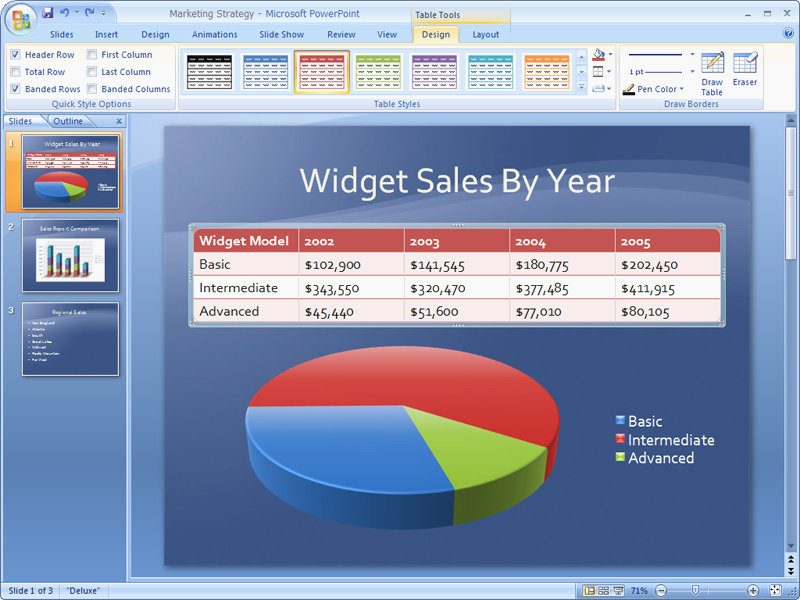

Microsoft Office 2007 promotional screenshot (Got Blue?) Office includes Word, Excel, PowerPoint, Outlook, Access, FrontPage, Visio, Project, OneNote, web services, and tools to build Office extensions, an incredible package of interconnected proprietary technologies.
Microsoft's relationship with document creators is older and more entrenched than its relation with Windows users; I've been using Windows since 1990, but have been using Word and Excel since 1986. For hundreds of millions of information workers, students, writers, and government employees throughout the world, the primary tools for producing their intellectual property is inside Microsoft Office, and there are billions of documents out there. I have heard that every corporate purchase in the UK involves the creation of an Excel spreadsheet. A friend in the military told me that creating PowerPoint documents is a required skill for the upper echelons.
Microsoft Office is a huge part of Microsoft's profits, and the best reason to install Windows. Today, about 50 million people use the free OpenOffice, while the rest of the world has paid $200 or $0 for a copy of Office. (The name “OpenOffice” is trademarked by someone else, so their “official name” is actually “OpenOffice.org”.)
When you realize how much intellectual effort is expended inside productivity tools, you realize how important it is that the file formats be documented. A company or a government would like to know that they can keep these files around for decades like they can with paper. This is, of course, a much harder challenge because on a piece of paper all the digitized words, text layout rules, and other formatting information are lost — imagine if someone replaced all your Word documents with screenshots of those documents; the information would be readable, but not editable.
The Microsoft Word team didn't try to build a file format they would be happy with for 20 years because they knew that engineering Word in 1993 to read the files of Word 2013 was an impossible task. For the first 10 years, Word n could never even read the files of Word n + 1. This is because for many years Office used binary formats, and it would have crashed if it tried. Inside a binary Word file, you might find the following data:
05 01
bold on
'0501' means turning on bold
05 00
bold off
'0500' means turning off bold
06 ??
?! ?!
What if an old Word doesn't understand '06'? What next?
If you don't know what '06' means, you don't know what is coming next, and so you can't continue and must abort. Even if you wanted to skip over it, you can't because you don't know how far to advance.
Microsoft did not create binary formats to lock out other vendors. Formats by all the word processors were binary for many years because it is efficient and because a better solution hadn't been invented.
The answer to this conundrum, which has plagued computing since the beginning, is for documents to be self-describing, and that is what eXtensible Markup Language (XML) is all about. XML defines how to create a document which any software can read and write without crashing, even if it doesn't completely understand it.
I can guarantee that the following XML (fragment, trimmed for clarity) will be readable by a word processor in 20 years:5
<?xml version="1.0" encoding="UTF-8"?>
<office:document-content office:version="1.0">
<office:body>
<office:text>
<text:p text:style-name="Standard">Hello, 2028!</text:p>
</office:text>
</office:body>
</office:document-content>
“Hello, 2028!” in Open Document Format (ODF)
XML is built upon Unicode, the standardization of all the world's characters, and adds to it <brackets> which allow you to find the end of every element, even those you don't understand.</brackets>
As tiny as it sounds, the key to being able to read old files years later, or new files with old code, is simply to make the data self-describing, allowing you to figure out a piece of data's name and length. The brackets, and the exact XML format, isn't important, what is important is the fact that all types of information you'd like to represent are doable in a way that is possible for humans to read and for computers to manipulate. When every computer uses a standardized, self-describing format, we will have taken a big first step in being able to exchange documents without causing a crash.6
XML is about having a standard, self-describing file format and is one of the most important standards in the history of computing, and just one of its uses will be the standard schema to represent the billions of office documents.
The Office binary formats were not documented for many years, and the license agreement for the documentation today says that you can only use the information for products that “complement Microsoft Office.” Is supplant the same thing as complement?!
Microsoft is not particularly interested in building an open standard because it will never perfectly represent their features, and because an open standard makes it easy to switch tools. Right now everyone buys Office because that is what you need to read the documents you receive today. The adoption of an open format for productivity tools is a mortal threat to Microsoft's Office profit margin.
Regrettably, there is a battle going on in the XML office document space. Microsoft has for many years ignored and then resisted the ISO standard called OpenDocument Format (ODF), and now they have created their own competing standard called Office OpenXML (OOXML). However, the whole point of a standard is to not have two of them.
XML provides the structure for your files and guarantees that applications should be able to parse everything, even parts they don't understand, without crashing. Given that baseline, it should be possible to create a format that can represent the features of office productivity tools. Microsoft's OOXML specification, which provides 100% compatibility with Microsoft Office, is 6,000 pages, while the ODF specification is only 1,000 pages because it doesn't re-use many existing standards like SVG, SMIL, MathML and XForms.7
OpenXML is also filled with legacy bloat. At the top of 600 pages of the VML specification is the following text:
Note: The VML format is a legacy format originally introduced with Office 2000 and is included and fully defined in this Standard for backwards compatibility reasons. The DrawingML format is a newer and richer format created with the goal of eventually replacing any uses of VML in the Office Open XML formats. VML should be considered a deprecated format included in Office Open XML for legacy reasons only and new applications that need a file format for drawings are strongly encouraged to use preferentially DrawingML.Microsoft has since moved to deprecate the VML spec in favor of the DrawingML format which is equally as proprietary, but Word 2007 generates VML, so deprecating the spec doesn't make the work go away for apps that want to interop with Microsoft's. Google wrote in their analysis of OpenXML:
Although OOXML may formally comply with Ecma, it was clearly not designed with an “open” spirit. Comparing the current with the future situation, interoperability is likely to become more difficult instead of easier. The implementation of a fully compatible ODF importer (the current efforts regarding .doc and .xls) is not an easy task, but it is dwarfed by the implementation of a fully compatible OOXML importer, which we estimate to take something between 50 – 500 person years, or even longer. Therefore, although it is theoretically possible to generate an OOXML document, this document will probably only use a very small subset of the standard. In sum, OOXML can be compared to Microsoft giving access to a labyrinth to which it alone owns a map; moreover, certain tunnels within this labyrinth are not accessible without a key that only Microsoft has, and that third parties would need to replicate first. (And, in doing so, these third parties would not know whether they would violate any rights that exposes them to litigation).All things being equal, leveraging existing standards is better than re-inventing them, and in choosing between two standards, the one which is smaller, because it re-uses other standards, is going to be a much better choice for the industry. A standard which is hard to support will be adopted slowly, or have buggy implementations. Today, OpenXML is mostly only supported by Microsoft, unlike ODF, which has broad industry support from companies like Red Hat, Adobe, Computer Associates, Corel, Nokia, Intel, Oracle, Novell, Google, IBM and Sun.
OpenXML is a proprietary format wrapped in XML. This is not a standard suitable for use by many different types of tools over many years. If you start on Day 1 with a lot of baggage, you are doomed. Microsoft has aggressively lobbied for OpenXML support, recognizing that adoption of ODF could make it easy to switch away from Office.
It is important to recognize that Microsoft Office is the most full-featured and popular productivity tools suite on the planet, and therefore any open format should support important Office features. My impression from reading through the specification is that the OpenDocument guys have bent over backwards to ensure good Microsoft Office compatibility, and they should be commended for their open-mindedness. For example, I was amazed, and slightly dismayed, to find references inside the spec to DDE, an obscure and now mostly dead Microsoft-only technology. However, this technology became a part of the Microsoft OLE “monikor” format, which specified how documents would embed portions of spreadsheets, and became an important part of Microsoft's documents, thus ODF supports it.
A robust, standard, self-describing file format for productivity tools will allow people to archive their documents, confident that the format will be readable many years into the future.8 In addition, like everything we build in computers, standards can become platforms for other standards. When ODF incorporates scenarios to encrypt and digitally sign documents, to notarize and transmit legal documents, and support cross-company workflow, e-forms and e-government, it could become a lingua franca in a way that Microsoft Word's DOC and PDF combined have never been.
“Competing standards” is a misnomer in my opinion, so perhaps it would be best if everyone were to adopt ODF. Sun is building extensions to Office to support this format, although if people start using the free OpenOffice, which uses this format as its native format, there is no real need for Office. This book was written using OpenOffice, and while the application is far from perfect, it is far beyond good enough for most users.
The state of Massachusetts was forward-looking in nearly adopting ODF, but after tons of lobbying by Microsoft, it reversed course and now endorses either OpenXML or ODF. They either caved on the idea of creating a standard, or they didn't really understand the issue. Microsoft has attempted to confuse many on the importance of standards as if saying: “There are many standards out there, and code should be able to work with all of them.” It is true that there are lots of standards, but each one should serve a different purpose!